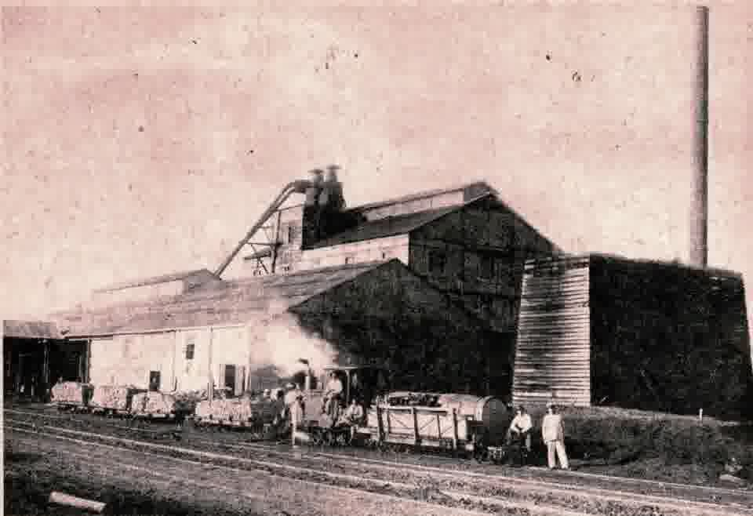

La tala no empezó con la soja: el siglo del quebracho y el ferrocarril
Mucho antes de que el monitoreo satelital global comenzara a registrar el planeta de forma continua en el año 2000, los bosques nativos argentinos ya habían sufrido su primera gran amputación histórica. Entre fines del siglo XIX y mediados del siglo XX, el tendido de la red ferroviaria nacional demandó millones de quebrachos colorados para transformarlos en durmientes, postes y leña industrial.
En el norte de Santa Fe y el sur del Chaco, compañías monopólicas como La Forestal instalaron ciudades enteras, puertos y ramales propios para extraer tanino de los quebrachales. Cuando la veta maderera se agotó a mediados del siglo XX, levantaron las vías y dinamitaron las fábricas, dejando tras de sí una cuña boscosa diezmada.
